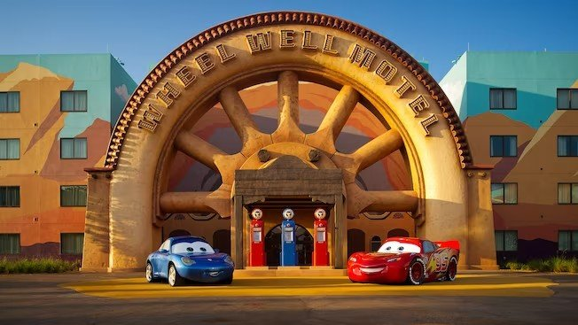
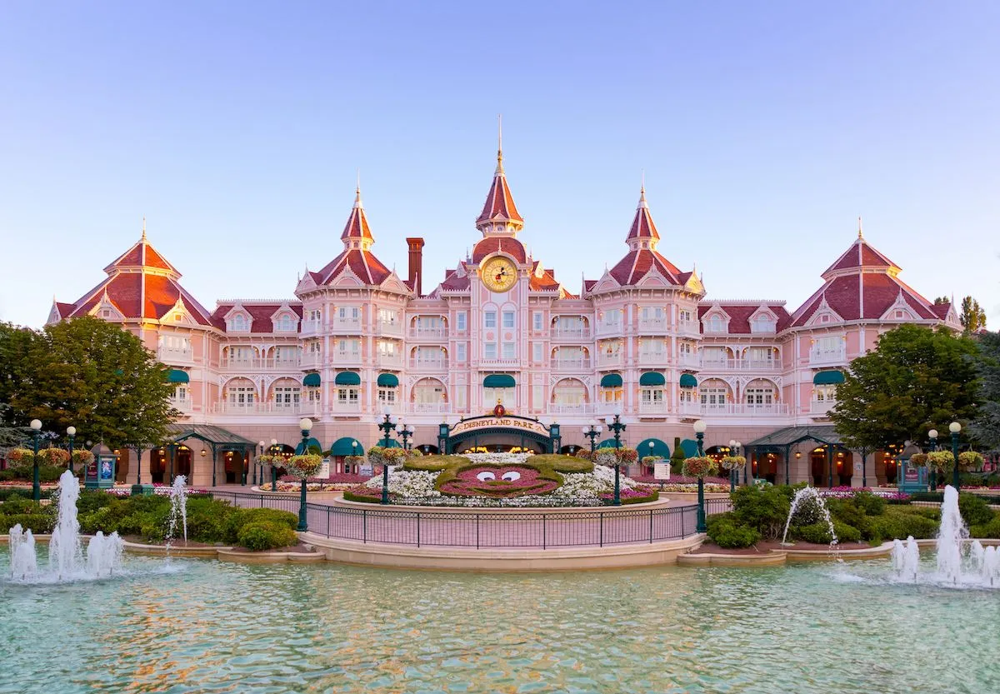
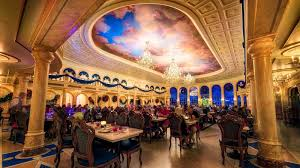
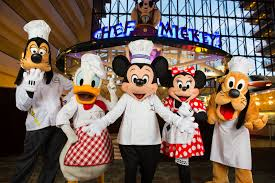
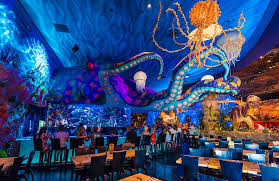

Experiencias
Hospede-se em um dos hotéis Disney e viva a magia do início ao fim! São diversas opções, desde resorts econômicos até luxuosos, todos com transporte gratuito para os parques, ambientações temáticas encantadoras e benefícios exclusivos para quem quer uma experiência completa. Na Disney, cada refeição é uma experiência encantadora de lanches rápidos a jantares com personagens, passando por pratos de diversas partes do mundo. Descubra restaurantes temáticos que agradam toda a família e deixam a sua viagem ainda mais inesquecível.





